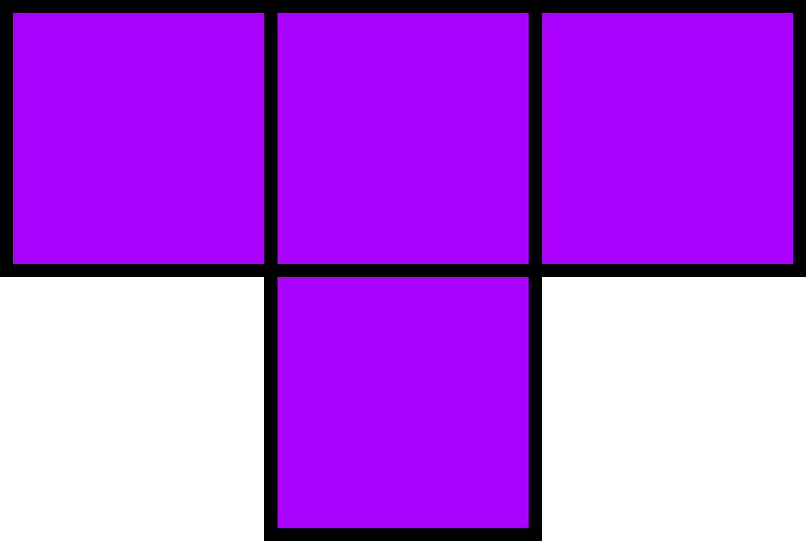

Address: 6901 Hansell Rd APT6227, Plano Tx, 75024 Phone:864-678-0569 Email:caleb.a.mccarthy@gmail.com
I'm a full stack developer passionate about learning new technologies. I work on a .net sql server stack but have worked with java, node, and golang stacks as well. I love to travel, study new languages and create webapps to solve everyday problems.
|
|
Vivify Health Software Engineer March 2017 - present, Plano, TX
Develop applications to support caregivers in hospitals and patients at home. Event Driven .Net backend with SQL Server and AngularJS SPA. Software solutions cater to multiple countries in multiple languages. Responsive Design with mobile first as a priority.
FIS Capco Energy Solutions Senior Consultant february 2016 to March 2017, Dallas, TX
Integrate two combined cycle power plants into the current internal web application. Designed and implemented all front end pages associated with the new power plant controls. Mentored new developer and taught the basics of web development, including making ajax calls, html, css, and javascript.
Lanyon Java Developer Nov 2014 to Feb 2016, Dallas, TX
Integrate two combined cycle power plants into the current internal web application. Designed and implemented all front end pages associated with the new power plant controls. Mentored new developer and taught the basics of web development, including making ajax calls, html, css, and javascript.
Clemson University bachelors of science in computer science 2014
Developed Ray Tracer in C and C++ with tree sorting algorithms. Created Email Client in Java with the Swing API. Gained Experience in network programming.Genetic Algorithms and an introduction to articial intelligence. Software design with UML diagrams. Parallel programming with MPI.
TypeScript Tetris
A fully playable Tetris clone Written in TypeScript, Canvas,Webpack,and npm. Supports All browsers except IE and Edge
HSKHanyu 中
An online tool to help English speakers study Chinese. Utilizing the open source CEDICT Chinese/English dictionary. Written in Angular 5, Golang and Mongodb running in a docker container.
Demo:www.hskhanyu.com
Back End Source:https://github.com/camccar/hskbackend
Front End Source:https://github.com/camccar/Hskfrontend
Chess Game ♘
A playable chess board with HTML5's canvas. Only valid moves are allowed.
Demo:http://camccar.github.io/Chess/
Source:https://github.com/camccar/Chess/tree/master/ChessGame